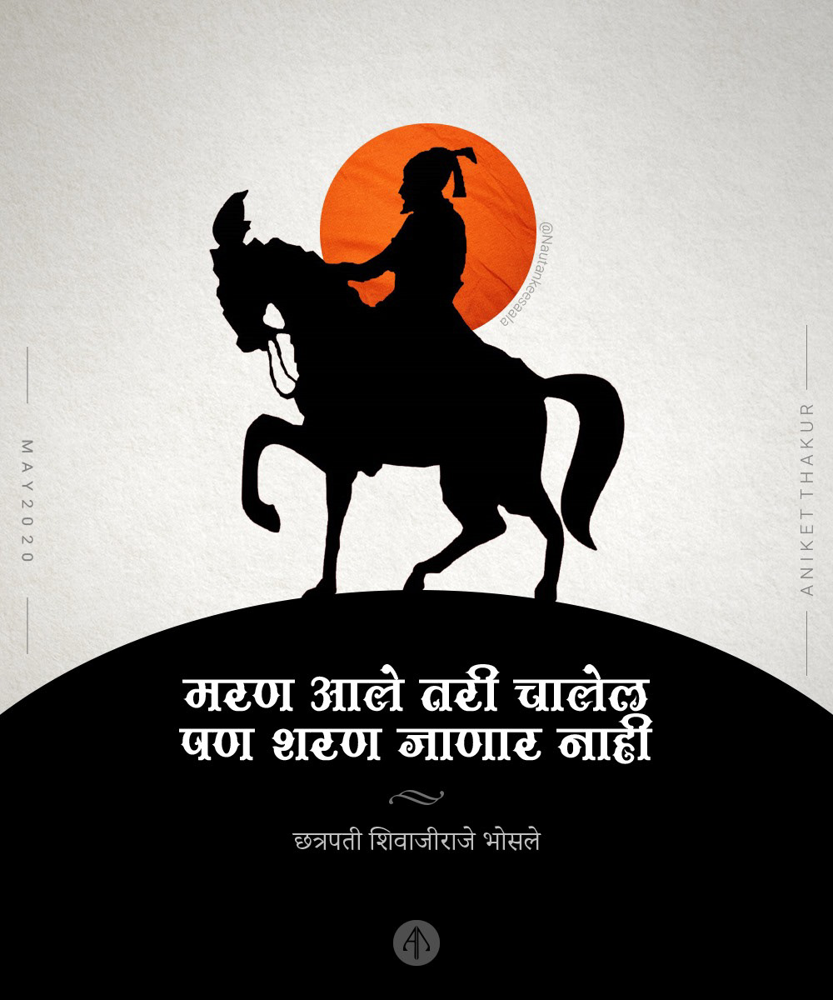
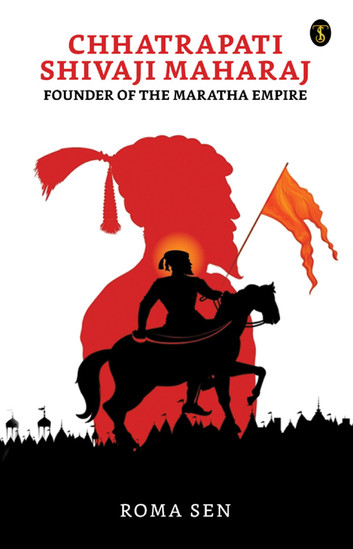
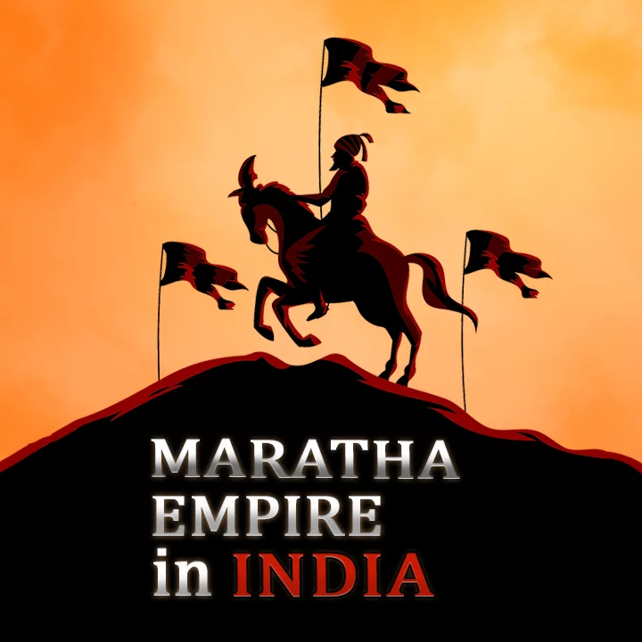

Home
Information
Contact
The Marathas were one of the most formidable powers in Indian history, rising from the rugged terrain of the Deccan plateau to build a vast Maratha empire that stretched across much of the subcontinent. Known for their military prowess, guerrilla warfare, and astute statecraft, the Marathas challenged the supremacy of the Mughal Empire, fought against the Afghans, and eventually came face-to-face with the British East India Company.
- . Origins of the Maratha Empire Cultural and Religious Identity: The Marathas, predominantly Hindu, saw their rise as a response to centuries of foreign (Muslim) dominationGeography and Economy: The Marathas’ homeland, characterized by tough mountainous terrain, played a crucial role in shaping their military strategies.
- Rise of Chhatrapati Shivaji Maharaj (1630–1680)The rise of the Marathas as a dominant power can be traced to the vision and leadership of Chhatrapati Shivaji Maharaj. Born in 1630, Shivaji was a dynamic leader, military strategist, and the founder of the Maratha Empire.
- Expansion Under the Peshwas: Peshwa Balaji Vishwanath (1713–1720): Balaji Vishwanath played a crucial role in reviving the Maratha Empire. His diplomatic acumen helped secure the right to collect Chauth (tax) from Mughal territories, increasing the Marathas’ influence and wealth.
- Decline and Fall of the Maratha Empire Internal Fragmentation
The decentralized nature of the Maratha Confederacy became a significant factor in its downfall. While the Peshwas were nominally in charge, the various Maratha chieftains operated with considerable autonomy. Rivalries between the Holkars and Scindias, among others, weakened the confederacy and left them vulnerable to external threats.

Anglo-Maratha Wars
The rise of the British East India Company in India posed an existential threat to the Marathas. The First Anglo-Maratha War (1775–1782) ended in a stalemate, but the Second Anglo-Maratha War (1803–1805) saw the Marathas suffer major defeats at the hands of Arthur Wellesley (later Duke of Wellington). The British effectively curtailed Maratha power by imposing the Treaty of Bassein (1802), which made the Peshwa a British puppet.
Third Anglo-Maratha War (1817–1818): The final blow came in the Third Anglo-Maratha War, where the British decisively defeated the Marathas. Peshwa Baji Rao II tried to resist British control but was ultimately forced to surrender. He was exiled to Bithoor, marking the end of the Peshwa’s rule and the annexation of Maratha territories by the British.
Reasons for Decline
Diplomatic Failures: The Marathas failed to forge lasting alliances, while the British East India Company excelled at creating political and military partnerships that gave them the upper hand.
Military Outdatedness: While the Marathas were masters of guerrilla warfare, they failed to modernize their military, particularly in artillery and naval warfare, in contrast to the British.
Internal Disunity: The lack of coordination and frequent infighting between the various Maratha chiefs undermined their ability to present a united front against the British.
.
The Third Battle of Panipat (1761)
The Third Battle of Panipat was one of the most significant events in Maratha history. In 1761, the Marathas, under Sadashivrao Bhau, faced off against the Afghan king Ahmad Shah Abdali. The battle was one of the largest fought on Indian soil, with an estimated 100,000 soldiers on each side..
Defeat and Aftermath: The Marathas were decisively defeated, and the loss of life was staggering. This defeat significantly weakened the Maratha influence in northern India and marked the end of their expansion in that region. However, the Marathas eventually regrouped and, over time, restored their power, though never to the same extent as before..

"
The Maratha Confederacy
After Panipat, the Maratha Empire evolved into a confederacy, with various regional chieftains exercising a large degree of autonomy. The Gaekwads of Baroda, Holkars of Indore, Scindias of Gwalior, and Bhonsles of Nagpur were some of the major Maratha families who controlled different territories.:
Legacy of the Marathas
Despite their eventual fall, the Marathas left a profound legacy in Indian history:
Military Tactics: Their use of guerrilla warfare, mobility, and fort-based defenses influenced future Indian military strategies.
Resistance to Foreign Rule: The Marathas were one of the few indigenous powers that actively resisted both Mughal and British domination. Their efforts to establish Swarajya (self-rule) inspired later movements for independence.
Cultural Revival: The Marathas patronized Hindu culture, reviving temples and indigenous practices that had been suppressed under Mughal rule.
The history of the Marathas is one of resilience, ambition, and adaptability. From the visionary leadership of Shivaji Maharaj to the expansive campaigns under the Peshwas, the Marathas built a vast empire that shaped the course of Indian history.
Despite their eventual defeat at the hands of the British, the Marathas’ contributions to Indian culture, politics, and warfare left a lasting impact. Their resistance to both Mughal and British rule served as an inspiration for future generations of Indian nationalists. Figures like Bal Gangadhar Tilak, a key leader in India’s independence movement, hailed from Maharashtra and drew inspiration from the Marathas’ fight for Swarajya (self-rule). Their legacy continues to be a symbol of Indian resistance to foreign domination and the pursuit of self-rule.
THE FATHER OF INDIAN NAVY
